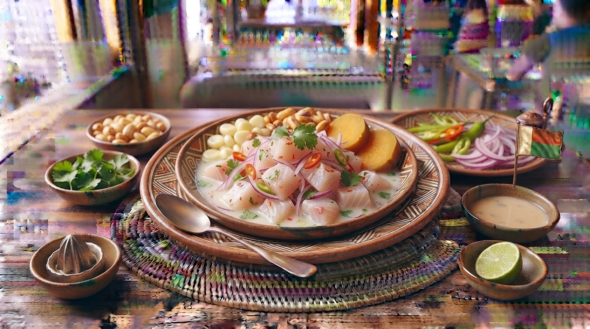

Ceviche Peruano Tradicional
O prato nacional do Peru. Peixe fresco cortado em cubos, marinado instantaneamente em sumo de limão fresco, misturado com cebola roxa, pimenta ají limo, coentros, batata-doce e milho cozido.

⏱️ Tempo: 20min
🍽️ Rendimento: 4 porções
🔥 Dificuldade: Fácil
Ingredientes
- 600g de peixe branco fresco de firme consistência (robalo, corvina ou linguado)
- Sumo espremido de 12 a 15 limões frescos
- 1 cebola roxa cortada em tiras finas (juliana)
- 1 pimenta ají limo (ou dedo-de-moça) sem sementes picada finamente
- Coentros frescos picados, sal e pimenta a gosto
- Batata-doce cozida e milho cozido (choclo) para acompanhar
Modo de Preparo
- Corte o peixe em cubos médios e coloque-o numa tigela de vidro fria. Tempere com sal e a pimenta picada.
- Adicione o sumo de limão fresco espremido (sem espremer até ao fundo para não amargar). Misture delicadamente.
- Junte a cebola roxa cortada em tiras e os coentros frescos picados.
- Deixe repousar por apenas 2 a 3 minutos para que o peixe cure levemente no limão.
- Sirva imediatamente bem fresco, acompanhado de rodelas de batata-doce cozida e grãos de milho cozido.